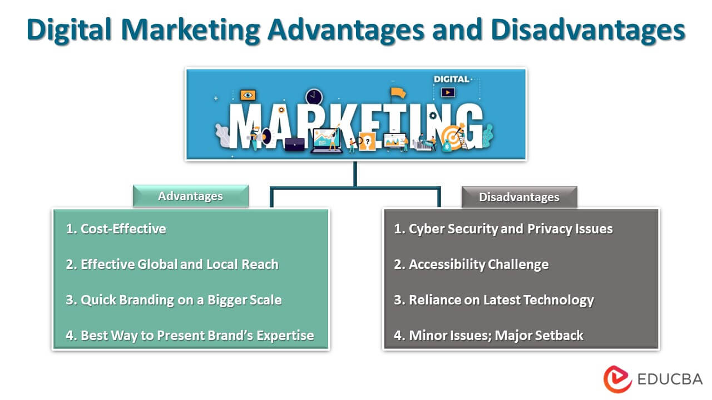

<!DOCTYPE html>
<html lang="en">
  <head>
    <meta charset="UTF-8" />
    <meta name="viewport" content="width=device-width, initial-scale=1.0" />
    <title style="font-size: 2.3rem; font-family: cursive">
      Digital Marketing Overview
    </title>
    <style>
      body {
        font-family: Arial, sans-serif;
        margin: 0;
        padding: 0;
        line-height: 1.6;
        color: #333;
        background-color: beige;
      }
      title {
        font-size: 2.5rem;
        font-family: cursive !important;
      }
      header {
        background-color: blue;
        color: #fff;
        padding: 20px 0;
        text-align: center;
      }
      .container {
        max-width: 800px;
        margin: auto;
        padding: 20px;
      }
      section {
        margin-bottom: 40px;
      }
      h2 {
        color: #333;
      }
      p {
        color: #555;
      }
      img {
        max-width: 100%;
        height: auto;
        margin-bottom: 20px;
      }
      footer {
        background-color: #333;
        color: #fff;
        text-align: center;
        padding: 20px 0;
        position: fixed;
        bottom: 0;
        width: 100%;
      }
    </style>
  </head>
  <body>
    <header>
      <h1>Digital Marketing Overview</h1>
    </header>

    <div class="container">
      <!-- <section>
            <h2>Content Marketing</h2>
            
            <p>
              Content marketing involves creating and distributing valuable content
              to attract and engage a target audience. This can include blog posts,
              articles, videos, infographics, and more. By providing helpful and
              relevant content, you can build trust with your audience and establish
              your brand as an authority in your industry.
            </p>
          </section> -->

      <section>
        <h2>Introduction</h2>
        
        <p>
          Digital marketing is the use of websites, apps, mobile devices, social
          media, search engines, and other digital means to promote and sell
          products and services. Digital marketing involves many of the same
          principles as traditional marketing and is often considered an
          additional way for companies to approach consumers and understand
          their behavior. Companies often combine traditional and digital
          marketing techniques in their strategies. But digital marketing also
          comes with its own set of challenges. Digital marketing started to
          become popular with the widespread adoption of the internet in the
          1990s.
        </p>
      </section>

      <section>
        <h2>Advantages and disadvantages of digital marketing</h2>
        
        <p>
          Digital marketing benefits businesses of all sizes by giving access to
          the mass market at an affordable price. Unlike TV or print
          advertising, it allows truly personalised marketing. Digital marketing
          also comes with a number of challenges you should be aware of.
        </p>
        <div>
          <h4>Advantages of digital marketing</h4>
          <p>
            The main advantage of digital marketing is that a targeted audience
            can be reached costeffectively and measurably. Other digital
            marketing advantages include increasing brand loyalty and driving
            online sales.

            <br />
            benefits of digital marketing include:
          </p>
          <div>
            <h5>Global reach</h5>
            <p>
              A website allows you to find new markets and trade globally for
              only a small investment.
            </p>
            <h5>Lower cost</h5>
            <p>
              A properly planned and well-targeted digital marketing campaign
              can reach the right customers at a much lower cost than
              traditional marketing methods.
            </p>
            <h5>Trackable, measurable results</h5>
            <p>
              Measuring your online marketing with web analytics and other
              online metric tools makes it easier to establish how effective
              your campaign has been. You can obtain detailed information about
              how customers use your website or respond to your advertising.
            </p>
            <h5>Personalisation</h5>
            <p>
              If your customer database is linked to your website, then whenever
              someone visits the site, you can greet them with targeted offers.
              The more they buy from you, the more you can refine your customer
              profile and market effectively to them.
            </p>
            <h5>Openness</h5>
            <p>
              By getting involved with social media and managing it carefully,
              you can build customer loyalty and create a reputation for being
              easy to engage with.
            </p>
            <h5>Social currency</h5>
            <p>
              Digital marketing lets you create engaging campaigns using content
              marketing tactics. This content (images, videos, articles) can
              gain social currency - being passed from user to user and becoming
              viral.
            </p>
          </div>
        </div>

        <div>
          <h4>Disadvantages of digital marketing</h4>
          <p>
            Some of the downsides and challenges of digital marketing you should
            be aware of include:
          </p>
          <div>
            <h5>Skills and trainings</h5>
            <p>
              You will need to ensure that your staff have the right knowledge
              and expertise to carry out digital marketing with success. Tools,
              platforms and trends change rapidly and you must keep up-to-date.
            </p>
            <h5>Time consuming</h5>
            <p>
              Tasks such as optimising online advertising campaigns and creating
              marketing content can take up a lot of time. It's important to
              measure your results to ensure a return-on-investment.
            </p>
            <h5>High competition</h5>
            <p>
              While you can reach a global audience with digital marketing, you
              are also up against global competition. It can be a challenge to
              stand out against competitors and to grab attention among the many
              messages aimed at consumers online.
            </p>
            <h5>Complaints and feedback</h5>
            <p>
              Any negative feedback or criticism of your brand is can be visible
              to your audience through social media and review websites.
              Carrying out effective customer service online can be challenging.
              Negative comments or failure to respond effectively can damage
              your brand reputation
            </p>
            <h5>Security and privacy issues</h5>
            <p>
              There are a number of legal considerations around collecting and
              using customer data for digital marketing purposes. Take care to
              comply with the rules regarding privacy and data protection.
            </p>
          </div>
        </div>
      </section>

      <section>
        <h2>KEY COMPONENETS OF DIGITAL MARKETING:</h2>
        
        <p>
          Email marketing is a powerful tool for reaching and nurturing leads.
          By sending targeted emails to your subscribers, you can promote your
          products or services, share valuable content, and drive traffic to
          your website. Effective email marketing campaigns can help you build
          relationships with your audience and drive conversions.
        </p>
      </section>

      <section>
        <h2>Social Media Marketing</h2>
        
        <p>
          Social media marketing involves using social media platforms like
          Facebook, Instagram, Twitter, and LinkedIn to connect with your
          audience, build brand awareness, and drive website traffic. By
          creating engaging content, running targeted ads, and interacting with
          followers, you can expand your reach and grow your business.
        </p>
      </section>

      <section>
        <h2>Pay-Per-Click (PPC) Advertising</h2>
        
        <p>
          PPC advertising allows you to display ads on search engines and other
          platforms and pay a fee each time someone clicks on your ad. This can
          be an effective way to drive targeted traffic to your website and
          generate leads quickly. Popular PPC platforms include Google Ads and
          Bing Ads.
        </p>
      </section>
    </div>

    <!-- <footer>
      <p>&copy; 2024 Digital Marketing Overview. All rights reserved.</p>
    </footer> -->
  </body>
</html>
